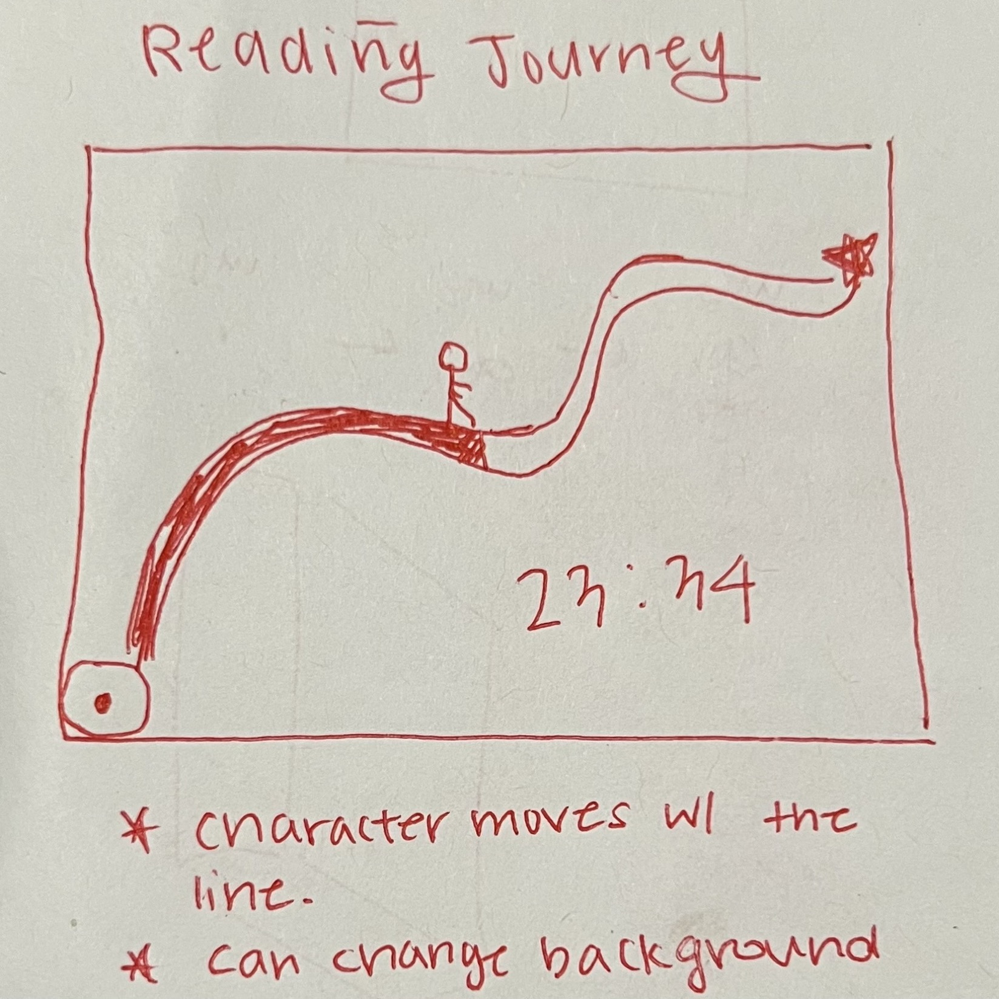
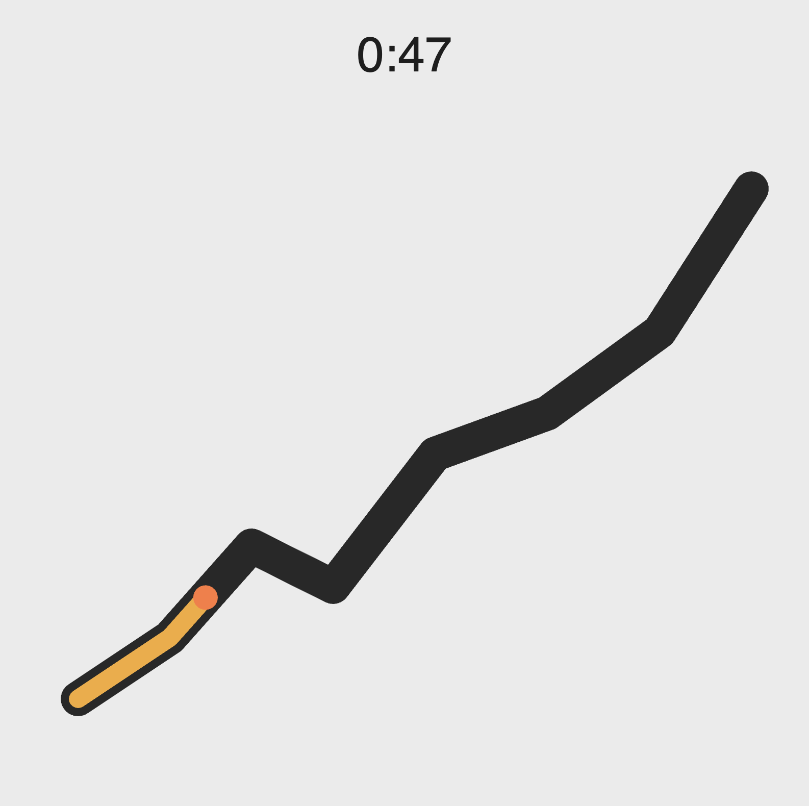
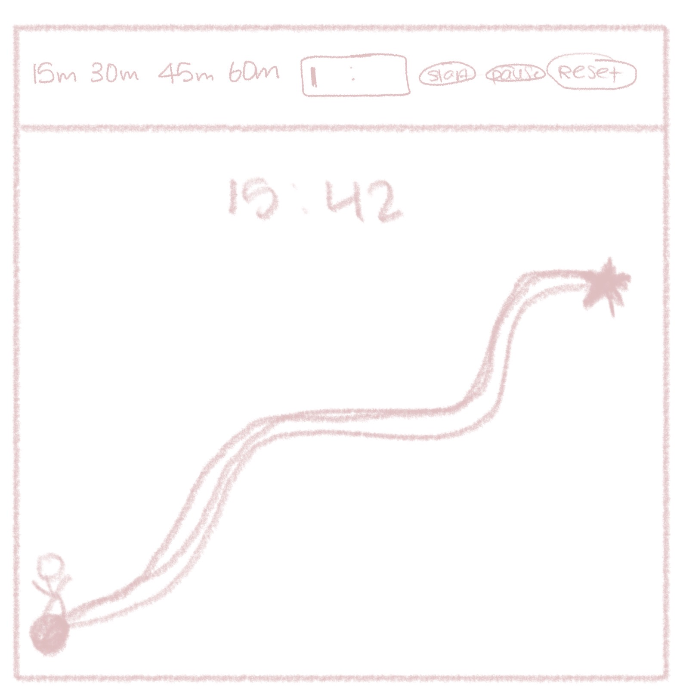

Final Clock 1
Sketch iteration documentation (paper/hand-drawn photos)

Step 1: Initial Layout

Step 2: Coded Out

Step 3: Added Buttons for Accessibiltiy
Design Choices
- The design started with the idea of turning a timer into a “Hero's Journey” instead of a simple countdown. I used a squiggly path to represent progress over time, since a straight line felt too mechanical and didn’t match the reading context.
- For color, I chose brown tones to create a calm mood and connect to the feeling of reading physical books. The background was styled to resemble paper so the path stands out while still fitting the theme. To make progress clearly visible, I used a bright, high-contrast color for the path fill. This improves readability and accessibility, since users can quickly see how much time has passed without relying on the numeric clock.
- Because the path is irregular and harder to read visually, I added 25%, 50%, and 75% landmarks. These act as checkpoints so users can estimate progress at a glance. I made them the same color as the fill, so once the path passes them, they disappear, reinforcing the sense of moving forward.
- I also made sure the hero character uses a distinct color from both the path and the fill. This follows hierarchy principles, the hero is the primary focus, the filled path shows progress, and the background/path structure stays secondary.
- I added preset timers and maintained strong contrast to support accessibility, making the timer easier to use quickly and for a wider range of users.
Self-reflection / future work
In the future, I would first increase overall scale. The path, text, and character are readable, but not as clear as they could be. Making everything larger would improve visibility and reduce effort needed to understand progress, especially at a glance. I would also add a completion sound. Since users are likely reading and not looking at the screen, a sound cue would make the timer more functional. It ensures the end of the session is noticeable without relying on visual attention.